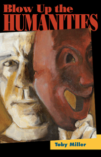

A crisp and engaging book that proposes how to save the dying humanities
A crisp and engaging book that proposes how to save the dying humanities


 A crisp and engaging book that proposes how to save the dying humanities
A crisp and engaging book that proposes how to save the dying humanities

|  |
Blow Up the HumanitiesToby Millerpaper EAN: 978-1-43990-983-6 (ISBN: 1-4399-0983-0) |
"Written with Miller’s signature blend of erudition and provocation, Blow Up the Humanities argues a thesis that is certain to generate an academic debate, and may even spill over into those sectors of the public media with a penchant for discussing the travails of higher education."
—Andrew Ross, Professor of Social and Cultural Analysis at New York University
A short, sharp, and provocative book, Blow Up the Humanities has esteemed scholar Toby Miller declaring that there are two humanities in the United States. One is the venerable, powerful humanities of private universities; the other is the humanities of state schools, which focus mainly on job prospects. There is a class division between the two—both in terms of faculty research and student background—and it must end.
Miller critically lays waste to the system. He examines scholarly publishing as well as media and cultural studies to show how to restructure the humanities by studying popular cultural phenomena, like video games. Miller ultimately insists that these two humanities must merge in order to survive and succeed in producing an aware and concerned citizenry.
Excerpt available at www.temple.edu/tempress
"A fascinating, fast-moving, and convincing account of where the humanities find themselves at the present time and the direction in which they should move if they are to succeed in their presumed task of producing critical citizens for an ever more complex world. In impressive detail for such a short, (deliberately) polemic text, Blow Up the Humanities offers its readers a map with which to navigate the chaotic mix of ‘entitlement and penury’ that has left the old-school humanities in a state of decline from which it is unlikely to recover. Miller has produced an effective and energetic critique of the limits of the humanities, and makes a spirited argument for new forms of humanities education."
—Imre Szeman, Canada Research Chair in Cultural Studies and Professor of English and Film Studies at the University of Alberta
"Blow Up the Humanities has a sassy irreverence that is usually characteristic only of populist hell-fire and bottom-line-oriented critics of the humanities. Miller is in fact a populist bottom-line oriented critic of the humanities, but he identifies with the left, using the language of class war to talk us into a different, more technology- and business-friendly version of the humanities. It's a genuinely new and original mixture."
—Bruce Robbins, Old Dominion Foundation Professor in the Humanities, Department of English and Comparative Literature, Columbia University
"Miller analyzes the decline of the humanities in American university education, drawing connections to economic downturns and the growing demand for more practical studies, such as government and economics. Professors, Miller argues, account for the schism between the thought of the humanities and the action of culture, and he provides well-researched examples of the perceived irrelevance of the humanities. Miller’s biting assessments of experts’ commentary provides moments of levity, but is occasionally acerbic."
—Publishers Weekly
"Miller’s distinctions and evidence ... provide an intriguing point of entry into current debates concerning the humanities.... Miller’s suggestions for renewal in the humanities not only have the potential to re-energize the humanities, but also to offer a way out of the crisis in the humanities."
—symploke
"Miller takes a lively, well-researched look at the dilemma facing the modern humanities.... Summing Up: Recommended."
—Choice
"[Blow Up the Humanities] is a quick and exciting text that is far more compelling than the typical academic work. It is thick with revealing statistics regarding the state of the university, publishing, and many other topics. Miller also displays an expansive knowledge of the field, hopping from one erudite point to the next.... Miller’s diagnosis of the dire position of the humanities and his call for an engaged critical theory that concerns itself with the symbolic mediation of material life are truly needed and are presented with an energy that is lacking from most academic discussions. As a call to revolution, it is largely successful."
—Teachers College Record
"I want to applaud Toby Miller's 2012 book, Blow Up the Humanities, and recommend it as a lively antidote to many of the written and visual platitudes recycled in The Heart of the Matter. Miller is not a kind writer, but he does have a way with words and a deep understanding of the history of debates concerning the value of the humanities and humanistic social sciences, both nationally and internationally."
—Public: A Journal of Imagining America
Acknowledgments
Introduction: The Two Humanities
1. Blowup Time
2. The Price of Science
3. Creative Industries—Credible Alternative?
4. A Third Humanities
Conclusion
References
Index
Toby Miller is Distinguished Professor of Media and Cultural Studies at the University of California, Riverside. He is author of Sportsex and Cultural Citizenship: Cosmopolitanism, Consumerism, and Television in a Neoliberal Age (both Temple) and runs the culturalstudies podcast.
Cultural Studies
Mass Media and Communications
American Studies
© 2015 Temple University. All Rights Reserved. This page: http://www.temple.edu/tempress/titles/2256_reg.html.